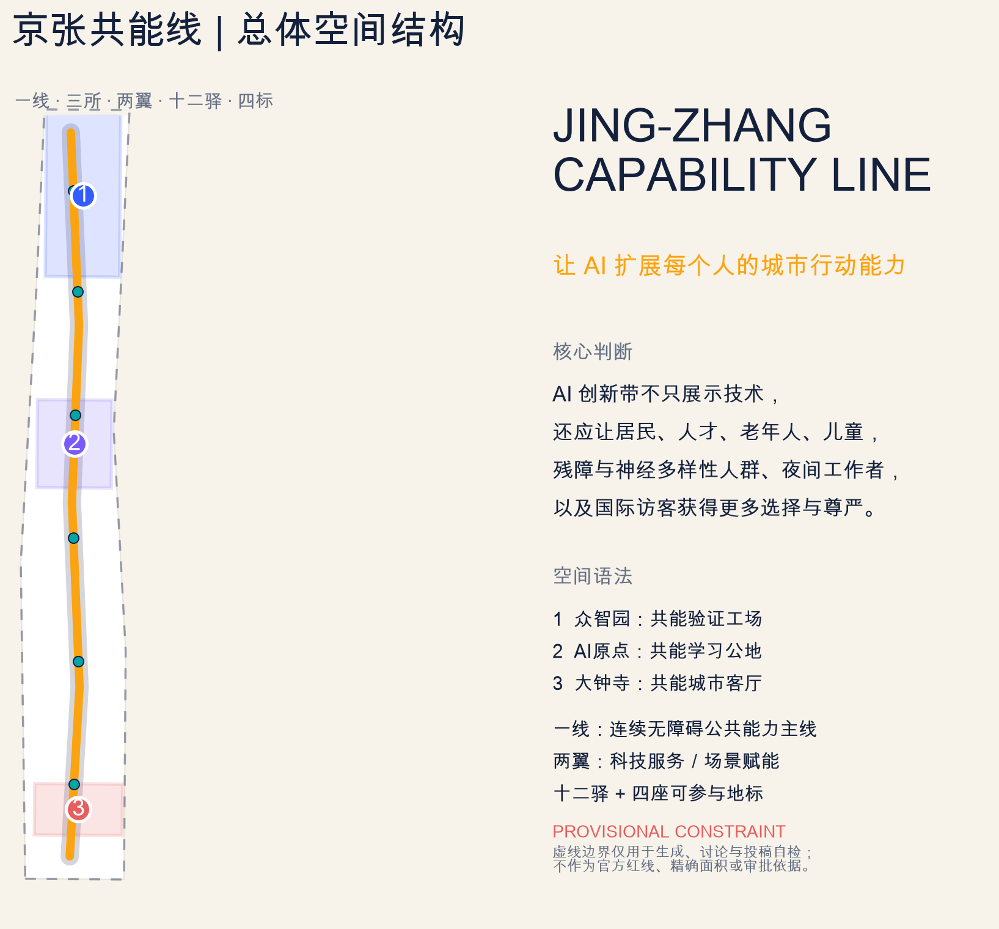
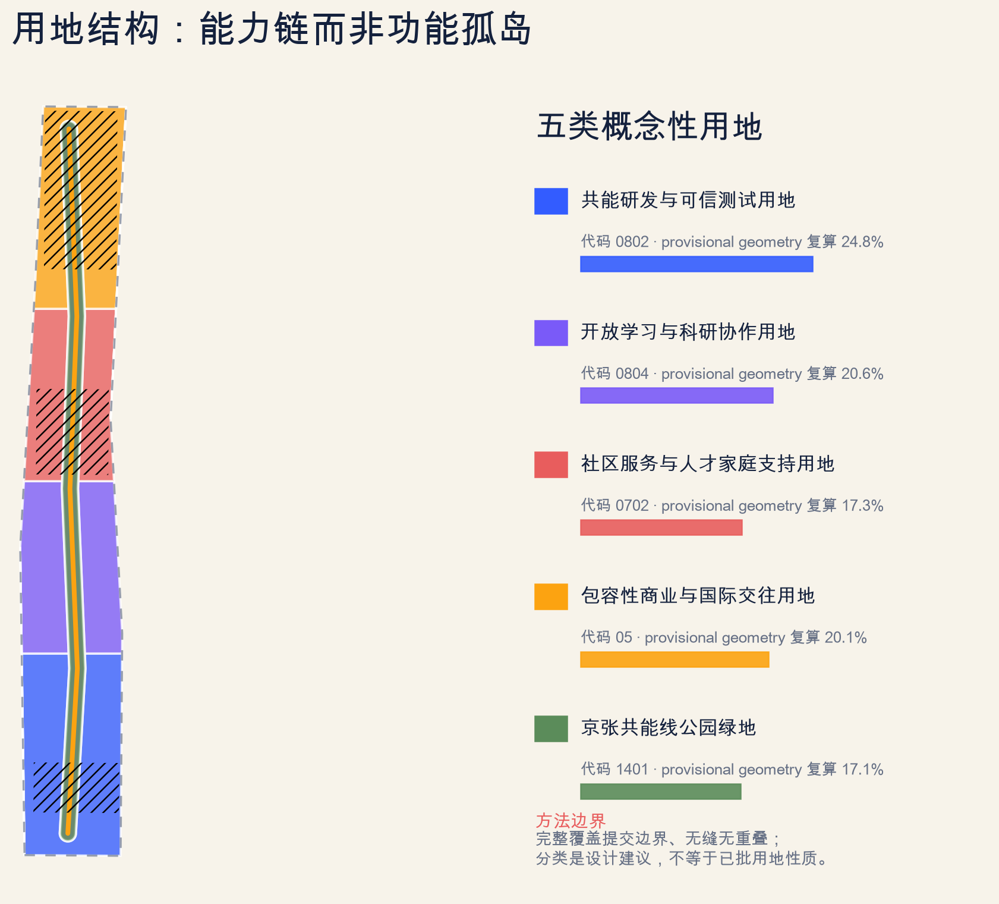
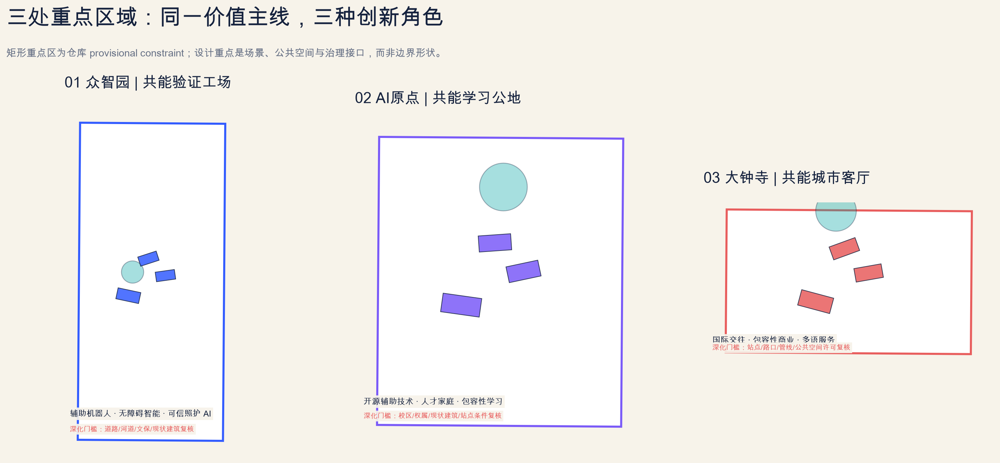
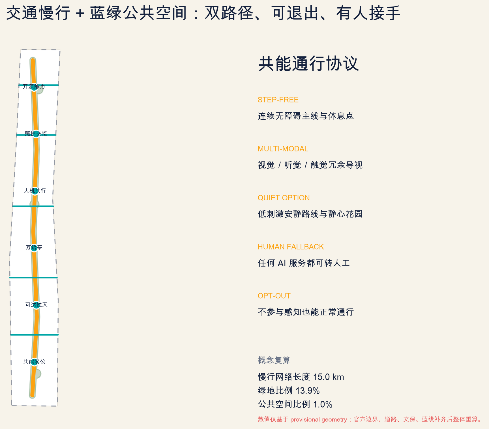
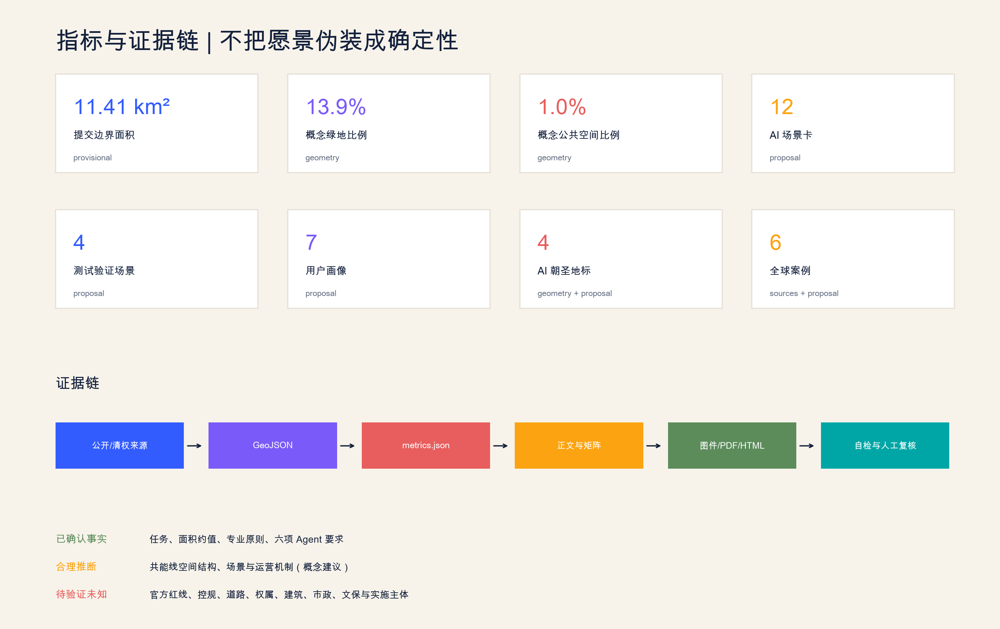

统筹研究范围
以能力技术产业链组织高校、企业、公共服务、标准和全球协同。
让 AI 扩展每个人的城市行动能力。一线、三所、两翼、十二驿、四标，把产业创新、公共生活、无障碍、照护与人工复核组织成同一条可验证城市能力链。
总体结构突出连续共能线、三处重点区域、两翼服务网络、公共节点与临时资料边界。

以能力技术产业链组织高校、企业、公共服务、标准和全球协同。
以连续无障碍主线串联用地分区、交通慢行、蓝绿公共空间、建筑与更新项目。
众智园验证、AI 原点学习、大钟寺城市体验，形成三种可转化角色。

无障碍智能、辅助机器人、可信照护 AI、安全治理与绿色测试。
开源辅助技术、人才家庭、数字能力教育与近校成果转化。
包容性商业、多语服务、智能终端、内容消费与国际交往。

双路径、可退出、有人接手：连续无障碍、感官冗余、安静选项、人工帮助和无感知通行共同构成“共能通行协议”。

12 张场景卡中的前 4 张是产业测试验证场景；所有场景都写明人工复核、退出和停止条件。
匿名任务完成率 + 可关闭AI
测试验证人工安全员 + 物理急停
测试验证残障/神经多样性共创
测试验证只提示转介，不自动诊断
测试验证实体导视与人工入口并存
公共场景许可证、贡献与失败记录可见
公共场景家长可见、教师复核
公共场景低门槛、重复学习、转人工
公共场景显示置信度与口译入口
公共场景无障碍结账与低刺激时段
公共场景查询、异议、删除与复核
公共场景清权史料、多语无障碍
公共场景建筑多边形是概念性适应性更新包络，不是现状建筑、拆除或新建结论。先调查，后复用，再讨论新增。
无障碍审计、共能验证工场、开源能力墙、万语城市客厅、数字帮助台、人机共行协议、AI 申诉站与记忆共述器。
高校-产业共址、开放数字平台与生活实验室。
以日常时间和居民共创检验智慧城市价值。
社区学习中心、帮助台、上门教育与老年导师。
通用设计、辅助技术、就业与社区服务共址。
围绕人、货物、信息和能源移动的共创测试。
公共提案、会议、意见与实施跟踪的可追溯界面。
compliance_matrix.json 覆盖公告 1.3、1.4、1.5 和 agent.1-agent.6；standard_matrix.json 与 design_depth_matrix.json 连接章节、图层、指标、图纸、来源、假设和自检。

文件结构、GeoJSON、矩阵、引用、离线 HTML、PDF 页数与 manifest 哈希由本地脚本核验。
PASS 只表示可进入内容评审，不代表官方批准、法定规划、工程可行或保证实施。
sources.json · data/source_registry.json · 官方公告 · Agent taskbook · JTC · Smart Kalasatama · Seoul Metropolitan Government · SG Enable · Toyota Woven City · Barcelona Decidim
assumptions.json · provisional boundary · missing controls · missing roads/parcels/buildings/utilities/heritage/public-facility baselines